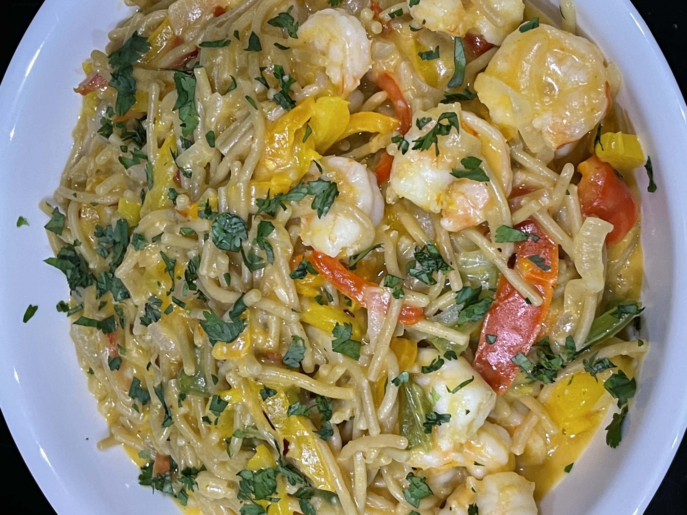

Creamy Lime-Sriracha Shrimp Pasta

Description
One of my first recipes to learn and tasty as well. This recipe is both
zesty and spicy in flavor.
Ingredients
- 1LB peeled Shrimp
- 2 Tbls fresh chopped Cilantro
- 4 Limes (3 for juice/1 for wedges)
- 2 Tbls Gourmet Garlic-Spice Paste
- 1 Green Bell Pepper cleaned and sliced in stripes
- 1 Yellow Bell Pepper cleaned and sliced in stripes
- 1 Yellow Onion sliced in half moon strips
- 2 (10oz)packages of Birds Eye Vegetable Pasta(frozen)
- 3 Tbls Sweet Chili sauce
- 3 Tbls Sriracha sauce
- 1/3 cup Kraft Reduced Fat Avocado Oil Mayonnaise
- 1/2 Tsp Kosher Salt
- 2 Tbls Butter
Steps
-
Melt butter in a large non-stick sauté pan over medium high heat 1-2
minutes
-
Place Peppers & Onions, Salt & Pepper in sauté pan , cook for 2-3
minutes, stirring occasionally or until vegetables begin to soften
- Cook Pasta following microwave package instructions
-
Add Shrimp to sauté pan and cook for 3-4 minutes, stirring occasionally,
until shrimp are opaque
-
Add Pasta to pan stir in and then add mayonnaise mixture and tossing to
coat, until hot
-
Divide Shrimp Pasta among serving bowls, and top with fresh chopped
Cilantro
- Serve with Lime wedges